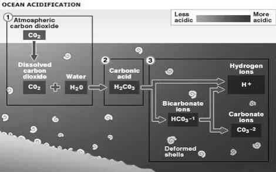

OCEAN ACIDIFICATION
-
18.1. OCEAN ACIDIFICATION
Oceans are an important reservoir for CO2, absorbing a significant quantity of it (one-third) produced by anthropogenic activities and effectively buffering climate change. Ocean acidification is the change in ocean chemistry - lowering of ocean pH (i.e. increase in concentration of hydrogen ions) driven by the uptake of carbon compounds by the ocean from the atmosphere.
As the uptake of atmospheric carbon dioxide by the ocean increases, the concentration of hydrogen ions in the ocean increases, the concentration of carbonate ions decreases, the pH of the oceans decreases and the oceans become less alkaline - this process is know as ocean acidification.
Forms of calcium carbonate
Calcite and aragonite are two different forms of calcium carbonate.
-
1. Calcite is the mineral form found in the shells of planktonic algae, amoeboid protists, some corals, echinoderms, and some molluscs (e.g. oysters); it is relatively less soluble.
-
2. Aragonite is a more soluble form of calcium carbonate; it is found in most corals, most mollusks (small planktonic snails), as well as some species of algae.
-
18.1.1. CO2 effect on ocean acidification
Corolmfi

Less plankton production
Acidrtkation
less productive fisheries
The uptake of atmospheric carbon dioxide is occurring at a rate exceeding the natural buffering capacity of the ocean.
The pH of the ocean surface waters has decreased by about 0.1 pH unit (i.e. 26% increase in ocean hydrogen ion concentration) since the beginning of the industrial revolution. The ocean currently has a pH around 8.0 and is therefore ‘basic’ and it is nearly impossible, chemically, for all of it to actually become a pH less than 7.0. Why do we therefore refer to ‘ocean acidification’?
That is because acidification is the direction of travel, the trend, regardless of the starting point. Acidification refers to lowering pH from any starting point to any end point on the pH scale.
-
18.1.2. Influence of other factors
Various factors can locally influence the chemical reactions of CO2 with sea water and add to the effects to ocean acidification. For example,
Acid rain can have a pH between 1 and 6 and has impact on surface ocean chemistry. It has major effect on ocean acidification locally and regionally but very small globally.
Coastal waters are also affected by excess nutrient inputs, mostly nitrogen, from agriculture, fertilizers and sewage. The resulting eutrophication leads to large plankton blooms, and when these blooms collapse and sink to the sea bed the subsequent respiration of bacteria decomposing the algae leads to a decrease in sea water oxygen and an increase in CO2 (a decline in pH).
How it reacts?
The term ‘ocean acidification’ summarizes several processes that occur when CO2 reacts with sea water.
Two reactions are particularly important. Firstly, the formation of carbonic acid with subsequent release of hydrogen ions:
CO2 + H2O
(Carbon dioxide) + (Water)
H2CO3 H+ HCO3--
(Carbonic acid) (Hydrogen ions) + (Bicarbonate ions)

The above reaction and release of hydrogen ions increases acidity and thus pH level is reduced.
A second reaction, between carbonate ions, CO2 and water produces bicarbonate ions.
The combined effect of both these reactions not only increases acidity but also lowers the availability of carbonate ions.
-
18.1.3. Effect of ocean acidification
Seawater absorbs CO2 to produce carbonic acid (H2CO3), bicarbonate (HCO3--) and carbonate ions (CO32-).
These carbonate ions are essential to the calcification process that allows certain marine organisms to build their calcium carbonate shells and skeletons (e.g. hard tropical corals, cold water corals, molluscs, crustaceans, sea urchins, certain types of plankton, lobsters, etc).
However, increases in atmospheric CO2 levels lead to decrease in pH level, increase in the concentration of carbonic acid and bicarbonate ions, causing a decrease in the concentration of carbonate ions.
Thus carbonate ions are less available and calcification is therefore harder to achieve, and may be prevented altogether. Imagine trying to build a house while someone keeps stealing your bricks.
This impact of ocean acidification may therefore have potentially catastrophic consequences for ocean life and many marine species of economic importance.
-
• Reducing CO2
-
• promoting government policies to cap CO2 emissions,
-
• eliminate offshore drilling,
-
• by advocating for energy efficiency and
-
• Alternative energy sources such as wind power, solar, etc.
-
18.1.5. Saturation horizons
-
• Deep, cold ocean waters are naturally under saturated with carbonate ions causing the shells of most calcifying organisms to dissolve.
-
• Surface waters are over saturated with carbonate ions and do not readily dissolve shells of calcifying organisms.
-
• The saturation horizon is the level below which calcium carbonate minerals undergo dissolution.
-
• Those organisms that can survive below the saturation horizon do so due to special mechanisms to protect their calcium carbonate from dissolving.
-
• As ocean acidification causes this horizon to rise vertically in the water column so more and more calcifying organisms will be exposed to under saturated water and thus vulnerable to dissolution of their shells and skeletons.
-
• The saturation horizon of calcite occurs at a greater ocean depth than that for aragonite, but both horizons have moved closer to the surface presently when compared to the 1800s.
Do you know?
Chameleons are seen inhabiting almost all the parts of south India and west of the Ganges. However, they are rarely seen in areas that receive heavy rainfall. Chameleons are mostly arboreal and are found in trees or on smaller bushes.
-
18.1.6. Ocean acidification and the short and long-term fate of carbon in the system
On long timescales (>100,000 years) there is a natural balance maintained between the up-take and release of CO2 on Earth; the CO2 produced by volcanoes, the main natural source of CO2, is taken up by the production of organic matter by plants and by rock weathering on land.
UPWELLING
Surface Coastal regions periodically experience upwelling events where deeper ocean water circulates onto continental shelves and near-shore areas.
This exposes the productive upper ocean ecosystems to colder water containing more nutrients & more CO2.
As ocean acidification makes the upper oversaturated layer of sea water shallower each year, these natural upwelling events will more often cause undersaturated water to well up and flow to the shore.
Coastal marine organisms that form shells are unaccustomed to such events, and periodic exposures to these significantly different conditions may affect these communities.
However, rock weathering takes tens of thousands of years so will not remove the current anthropogenic input of CO2 to the atmosphere and ocean fast enough.
On shorter time scales (>1,000 years), the ocean has an internal stabilizing feedback linking the ocean carbon cycle to the underlying carbonate rich sediment known as carbonate compensation.
The upper layers of the ocean tend to be supersaturated with CaCO3 so little dissolution takes place, whilst the deep ocean is undersaturated and carbonate readily dissolves.
The first boundary between these two states is known as the lysocline, the depth at which dissolution strongly increases in the deep ocean.
The CaCO3 in the form of dead shells sink to the sea bed. If it is of shallow water depth, the majority is buried in the sediment and trapped for a long time, but where the shells sink in deep water nearly all the CaCO3 is dissolved, thereby not locking the carbon away for millions of years.
The current increased rate of dissolution of atmospheric CO2 into the ocean results in an imbalance in the carbonate compensation depth (CCD), the depth at which all carbonate is dissolved.
As the pH of the ocean falls, it results in a shallowing of the lysocline and the CCD, thus exposing more of the shells trapped in the sediments to understaturated conditions causing them to dissolve, which will help buffer ocean acidification but over a long time scale of a thousand years.
Do you know?
The park had been put on the tentative list of future heritage sites of UNESCO in 2009 and had been included in the final list in 2014. The Odisha government had submitted a dossier, compiled by the Wildlife Institute of India, recommended to UNESCO that the park be declared a World Heritage Site.
-
18.1.7. Winners and losers
-
• The growth and level of photosynthesis of certain marine phytoplankton and plant species may increase with higher CO2 levels, but this is by no means a general rule.
-
• For others, higher CO2 and rising acidity may have either negative or neutral effects on their physiology.
-
• Therefore, particular marine plants will be ’winners’, while others will be ‘losers’ and some may show no signs of change but change is inevitable.
A reduction in atmospheric CO2 levels is essential to halt ocean acidification before it is too late.